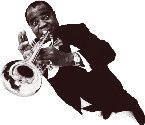
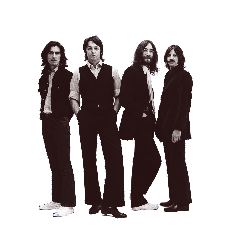

We Are The World was written by Michael Jackson and Lionel Richie and released in 1985. It followed Band Aid’s Do They Know It’s Christmas, and was used to raise money for people in need in Africa. Celebrities such as Stevie Wonder, Diana Ross and Bob Dylan participated, and over 20 million copies were sold worldwide. Over $60 million dollars was raised.
We are the world,
We are the children,
We are the ones who make a brighter day,
So, lets start giving,
There’s a choice we're making,
We're saving our own lives,
Its true we’ll make a better day,
Just you and me.
Released in 1967, this song is about the beauty of the world. It was written by Bob Thiele and George David Weiss and topped the charts in the UK. Louis Armstrong’s deep, warm voice has made the song an all-time classic.

I hear babies crying, I watch them grow,
They’ll learn much more than I’ll never know,
And I think to myself what a wonderful world.
Alive again, oh you make me feel like I’m alive again.
This song was written by John Lennon and was the UK’s contibution to the first live, international TV show Our World,  which was broadcast in 1967. With more than 500 million viewers worldwide, the song was an instant hit. The Beatles wanted a song that would speak to everyone, and who doesn’t need love?
There’s nothing you can make that can’t be made,
No one you can save that can’t be saved,
Nothing you can do but you can learn how to be you in time,
It’s easy, all you need is love, all you need is love.
This is an uplifting song for anyone who has a broken heart. It was released in 2001. The band, which was led by superstar Beyoncé Knowles, split in 2006.
Thought that I would fail without you,
but I’m on top,
Thought it would be over by now, but it won’t stop,
Thought that I would self destruct, but I’m still here,
Even in my years to come, I’m still gonna be here
I’m a survivor, I’m not gonna give up,
I’m not gonna stop, I’m gonna work harder,
I’m a survivor, I’m gonna make it,
I will survive, keep on surviving.
Known for her outlandish clothes, Mother Monster, as she calls herself, has inspired millions with her music and own particular style. Released in 2011, the song encourages Lady Gaga’s “Little Monsters” to accept themselves for the way they are.
I was born this way,
Don't hide yourself in regret,
Just love yourself and you’re set,
I’m on the right track,
Baby, I was born this way
Oh, there ain’t no other way,
Baby, I was born this way,
Baby, I was born this way.
This Irish rockband has been around since 1976, and lead singer Bono is well-known for his charity work, mainly for the poor in Africa. Summer Rain was released in 2000 as part of the album, All that you Can’t Leave Behind. It tells us not to be afraid of ourselves and to feel the strength within.
It’s not why you’re running,
It’s where you’re going,
It’s not what you’re dreaming,
But what you’re going to do,
It’s not where you’re born,
It’s where you belong,
It’s not how weak,
But what will make you strong.
This song featured in the movie The Wiz (1978), which was inspired by the musical of the same name. The movie featured superstars such as Michael Jackson and Diana Ross.
Everybody be glad,
Cos the sun is shining just for us,
Everybody wake up,
Into the morning into happiness,
Hello, world,
It’s like a different way of living now,
And thank you world,
We always knew that we’d be free somehow.
Dionne Warwick was born into a musical family in 1940. She is not only a singer, but also a successful actress and TV-show host. That’s What Friends Are For was originally recorded by Rod Stewart for the soundtrack of the movie Night Shift, but became a hit after Warwick covered it in 1985. The song is about the importance of friendship in times of need.
Keep smiling, keep shining,
Knowing you can always count on me,
For sure, that’s what friends are for,
For good times and bad times,
I’ll be on your side forever more,
That’s what friends are for.